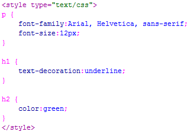
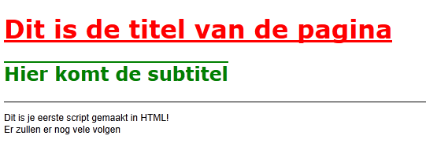
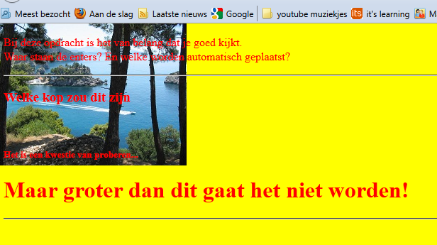

Opmaak
Het verschil tussen intern en extern kennen we nu. We gaan nu kijken naar de verschillende CSS codes. Er zijn, net zoals in HTML, ontzettend veel verschillende CSS codes met allemaal een eigen werking. Deze kan je niet allemaal uit het hoofd kennen dus gaan we de belangrijkste bekijken.
| CSS | Betekennis |
| font-family | Lettertype. |
| font-size | Grootte lettertype in pixels |
| font-style | Italic (scheef) |
| font-weight | Bold (vergedrukt) |
| text-decoration | Lijn onder, boven of door de tekst. |
| color | Tekst kleur |
Je ziet dat de benaming van opmaak van tekst niet altijd even logisch is ingedeeld. Omdat je dit niet allemaal uit je hoofd hoeft te kennen kun je het beste de code hinting van Dreamweaver zoveel mogelijk gebruiken (ctrl + spatiebalk). Deze is namelijk zo ontwikkeld dat alleen de CSS code die bij een bepaalde HTML tag horen, weergeeft.
Daarnaast is het ook lastig om te zien wat voor waardes ingevuld moeten worden bij verschillende CSS codes. Ook daarvoor is de code hinting handig. Gebruik deze dus!
| Voorbeeld 1 |
|  |
| Opdracht 1: CSS code |
|
Open in je editor het bestand van Opdracht3-1.html
Sla het bestand op als Opdracht11-1.html. |
We gaan nu verder kijken naar het overerven gedeelte. Standaard wordt alle tekst met het lettertype Times New Roman getoond. Dit is niet fout maar mooi is het niet. Times New Roman is namelijk een schreef-lettertype en deze gebruiken we bijna niet op een webpagina. Schreefloze lettertypes lezen vaak fijner. Dit zijn onder andere Verdana, Arial of Tahoma. Als we alle tekst op de pagina in Verdana willen hebben kunnen we natuurlijk elke HTML tag in de CSS noemen maar dat is niet logisch. Wat we wel kunnen doen is aan de <body> tag een CSS code met daarin font-family: Verdana; koppelen. <body> is namelijk ook een HTML tag en dus kan die worden genoemd in de CSS. Maar wat gebeurt er als we vervolgens aan een <h1> tag, die binnen de <body> staat, font-family:Arial; koppelen? In dat geval geldt de waarde van de HTML tag welke het “dichtste” bij staat. Alle tekst op de webpagina wordt dan in Verdana getoond. Alle <h1> tekst in Arial. Dit is overerven. Je moet dus goed opletten of je geen dubbele CSS codes in je CSS hebt. Als dit moedwillig is, is dat uiteraard niet erg.
| Opdracht 2: CSS code |
|
Open in je editor het bestand van Opdracht11-1.html
Sla het bestand op als Opdracht11-2.html. |
| Voorbeeld 2 |
|  |
Achtergrond
Met de <body> tag kan je nog veel meer in CSS. Zo kun je een plaatje als achtergrond instellen, een kleur kiezen en de tekst kleur veranderen.
| CSS code | Werking |
| background-color | Kleur van de webpagina |
| background-image | Afbeelding op de achtergrond van je webpagina |
| background-repeat | Moet de afbeelding maar 1x of meerdere malen voorkomen |
| background-attachment | Moet de afbeelding mee scrollen of blijven staan. |
| color | Tekst kleur |
Waarbij je op moet passen bij het plaatsen van een afbeelding op de achtergrond is dat een afbeelding vaak veel verschillende kleuren bevat. De kleur van de tekst mag niet in het plaatje voorkomen. Anders is de tekst namelijk onleesbaar.
| Opdracht 3: Achtergrond |
|
Open in je editor het bestand van Opdracht3-2.html
Sla het bestand op als Opdracht11-3.html en opmaak11-3.css. |
Je ziet dat het er niet echt mooi uitziet. Je plaatje wordt heel vaak herhaald. Dit kun voorkomen door de background-repeat op no-repeat te zetten.
| Opdracht 4: Achtergrond |
|
Open in je editor het bestand van Opdracht11-3.html en opmaak11-3.css
Sla het bestand op als Opdracht11-3.html en opmaak11-3.css. |
| Voorbeeld 3 |
|  |